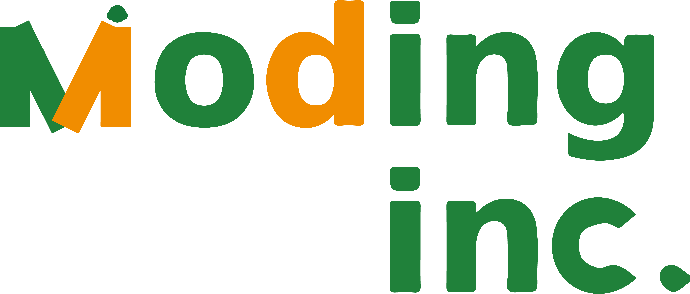

Moding Inc.
Moding Inc.
은
식품 제조사와 외식업 사장님이
더 빠르고 더 안전하게 연결될 수 있도록 설계된
B2B Food-SaaS 플랫폼입니다.
누군가는 정성껏 만든 제품을 팔 곳이 없어 고민하고,
누군가는 매장 운영에 필요한 좋은 제품을 찾지 못해 어려움을 겪습니다.
모딩은 이 간극을 기술로 메우고,
양쪽 모두가 성장하는 생태계를 만드는 것을 목표로 합니다.
모딩이 필요한 이유
식품 제조 시장과 외식업 시장은 빠르게 변화하고 있지만,
거래와 정산, 제품 정보 관리는 여전히 비효율이 많습니다.
제조사는 판로 확보가 어렵고,
외식업 사장님은 믿을 수 있는 제품을 찾기 위해 많은 시간을 사용합니다.
모딩은 이러한 구조적 문제를 해결하기 위해 탄생했습니다.
모딩이 만드는 연결
1. 제조사와 모딩
- 제품 등록부터 주문·세금계산서 발행까지 자동화된 프로세스
- 합리적인 수수료 기반의 거래 구조
- 판매 내역과 정산을 즉시 확인할 수 있는 실시간 대시보드
- 브랜드와 제품의 가치를 온전히 드러낼 수 있는 상품 페이지
2. 외식업 사장님과 모딩
- 검증된 제조사의 소스·원부재료·밀키트를 한 곳에서 비교·주문할 수 있는 환경
- 결제·정산·내역 확인까지 통합된 SaaS 도구
- 매장 운영에 직접 도움이 되는 데이터 기반 추천
모딩의 혁신 기술
모딩은 단순한 온라인 도매몰이 아니라,
거래·결제·정산·데이터 관리가 하나의 구조로 연결된
B2B Food-SaaS 플랫폼입니다.
- 자동화된 정산 시스템 : 복잡한 수기 정산 없이 결제→정산→내역 관리가 한 흐름으로 처리됩니다.
- 전자세금계산서 연동 : 제조사와 외식업 사장님 모두 전자동 발행 시스템을 통해 별도의 세금계산서 정리 작업이 필요 없습니다.
- 데이터 기반 분석 도구 : 상품 판매 추이, 반복 주문 패턴, 시즌별 수요 등 실제 매장 운영과 제조사의 생산 및 판매 계획에 도움이 되는 정보를 제공합니다.
- 안전하고 투명한 거래 환경 : 모딩은 ‘통신판매중개자’의 지위를 명확히 하여 제조·유통·품질·안전의 직접 당사자가 아니며, 양 당사자가 효율적으로 거래할 수 있는 기술 기반만을 제공합니다.
모딩의 운영 철학
모딩 경영팀은 식품 제조와 외식 서비스 현장을
두루 경험한 사람들로 이루어져 있습니다.
현장의 언어를 이해하는 만큼,
현장에서 정말 필요로 하는 기능만 남기고
불필요한 것들은 과감히 덜어냅니다.
조용히, 그러나 단단하게.
현장에서 오래 쓰이는 도구를 만드는 것이
모딩의 첫 번째 원칙입니다.
제조사와 사장님이 오래 함께 갈 수 있는
건강한 거래 구조를 우선합니다.
모딩은 가격 덤핑 경쟁, 복잡하고 불투명한
수수료 구조는 지양합니다.
모딩과 함께하고 싶으신가요?
식품 제조사와 외식업 사장님을 대상으로
모딩(Moding)의 1차 파트너를 모집하고 있습니다.
입점·제휴·플랫폼 관련 문의는 아래 채널로 연락 주세요.
현재 베타 단계로, 일부 기능은 순차적으로 제공됩니다.